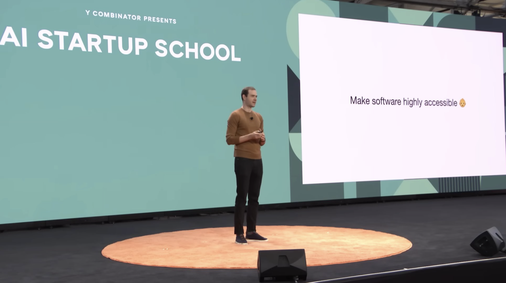
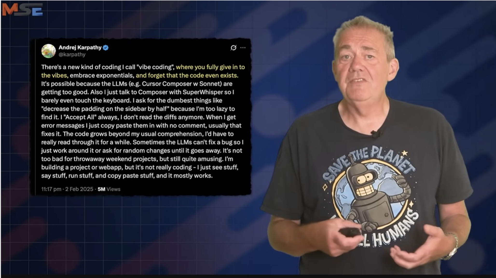
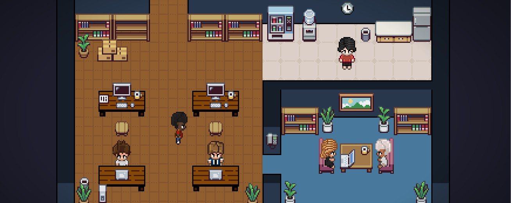
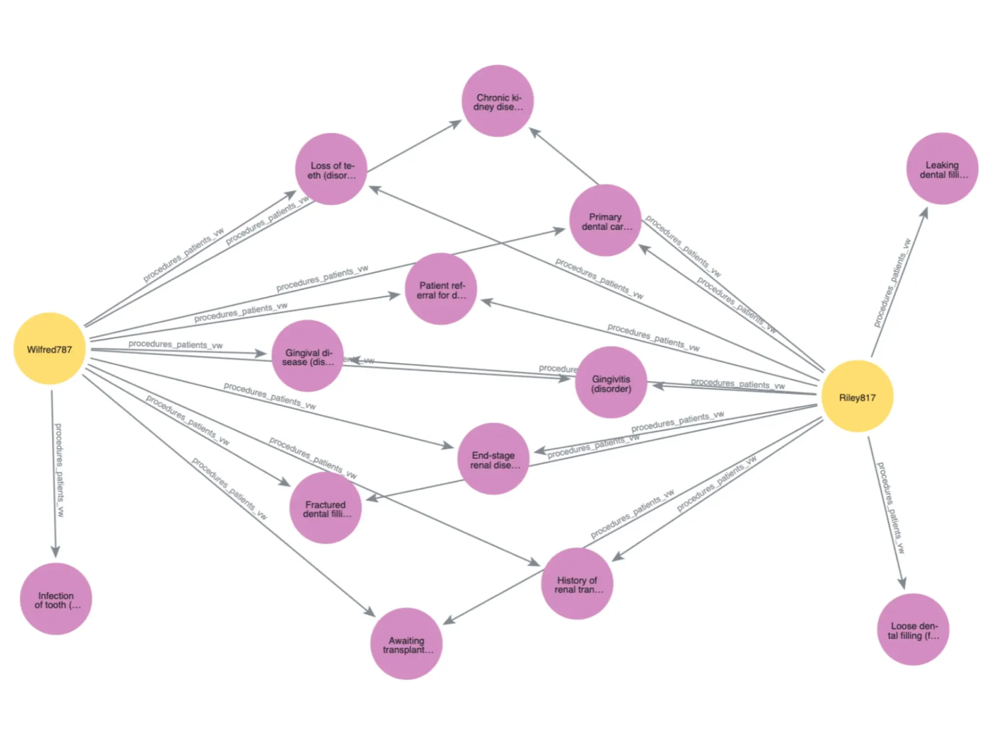

6. multi agents and vibe coding
AI Agenter og automatisering
Agenda
- Single vs. Multi agents
- Vibe coding
- Multi agents apllied
- Assignment/exercise
Install one of these:
- Claude Code
- Codex (ChatGPT/OpenAI)
- Mistral Vibe
- Gemini CLI
- Ollama Launch
- e.g. ollama launch claude –model devstral-small-2
Multi-Agent Systems (MAS)
Single-Agent Systems (SAS)
- Definition
- Single-Agent System (SAS): A system where one AI agent performs tasks sequentially without collaboration.
- Characteristics
- Sequential Execution: Tasks are completed one after another.
- Single Context Window: Limited by the agent’s context size (risk of “context rot”).
- No Parallelism: All computation happens in one agent.
- Example
- Task: Example: A solo developer building a game
- Designs characters (agent).
- Codes mechanics (agent).
- Tests the game (agent).
Limitations of Single-Agent Systems (SAS)
- Limitation: If the agent’s ‘memory’ (context) gets full, it might forget early details!
- Finite sizeof context window (even with 1M+ tokens).
- “Context rot”: Performance drops as context fills up.
- “Problem”: Brain Overload
- Imagine trying to remember 10 books at once—you’d mix up details!
- A single agent faces the same issue with too much data.
- Sequential Tasks:
- SAS excels when tasks depend on prior steps (e.g., analysis → design → coding).
Multi-Agent Systems (MAS) Overview
- Definition: Multiple AI agents collaborating to solve tasks.
- Key Principle: “Test-time compute scaling” → More tokens = better performance.
- More Agents = More Brainpower
- Each agent focuses on one task, like a team of specialists
- Why MAS?
- Parallel processing (e.g., research agents).
- Specialization (e.g., agents with curated tools).
- Mitigates “context rot” (performance drop in large context windows).
Test-Time Compute Scaling
- Definition: Improving AI performance by increasing computation during inference (not just training).
- Key Idea: More agents → More context windows → More tokens/tool calls → better results.
- Task: Plan a trip
- SAS: One agent researches flights, hotels, and activities (slow, might forget details).
- MAS:
- Agent 1: Books flights.
- Agent 2: Finds hotels.
- Agent 3: Suggests activities Result: Faster, no “brain overload.
How Test-Time Compute Scaling Works
- Longer Token Generation:
- Models “think” longer (e.g., iterative reasoning).
- Tool Calls:
- Interact with APIs, databases, or real-world actions.
- Real-World Interaction:
- Execute tasks (e.g., web searches, code runs) to refine outputs.
Why Test-Time Compute Scaling Matters
Four Architectures for MAS
1. Independent
- Description: Agents work in isolation (no communication).
- Example: Generate 3 UI designs → pick the best.
- Pros: Simple, no coordination.
- Cons: Marginal gains.
2. Decentralized
- Description: Peer-to-peer communication (no hierarchy).
- Example: Anthropic’s C compiler (16 agents, $20K cost, 99% accuracy).
- Pros: Good for exploratory tasks.
- Cons: High coordination overhead.
3. Centralized
- Description: Orchestrator delegates tasks to workers.
- Example: Anthropic’s research system (lead agent + sub-agents).
- Pros: Lowest error amplification.
- Cons: Complex harness design.
AI harness
- ”Harness” as a word to describe the tooling and practices we can use to keep AI agents in check
- Designing the tooling + engineering practices that wrap around agents so they behave predictably, safely, and in line with your system’s constraints.
- Examples
- Only lets it touch a checked-out repo in a sandbox.
- Forces “write code → run tests → only merge if green”.
- Blocks any call that would hit production infra directly.
- Logs every action to your observability stack and alerts on anomalies.
4. Hybrid
- Description: Centralized oversight + decentralized communication.
- Example: Claude Code’s “agent teams.”
- Pros: Balances error correction and flexibility.
- Cons: Most complex architecture.
Case Study: Anthropic’s C Compiler
- Task: Build a C compiler in Rust.
- Approach: 16 agents, 2 weeks, $20K API costs.
- Result: 100K lines of code, 99% accuracy on benchmarks.
- Trade-off: Faster/cheaper than humans but lower quality.
Agent Communication I
- Why Communication Matters
- Agents need to share data to collaborate effectively.
- Poor communication → wasted effort or errors.
- Methods of Communication
- Shared Memory
- Agents read/write to a common database or file.
- Example: A shared Google Doc where all agents add notes.
- Pros: Simple, no direct coordination.
- Cons: Risk of conflicts (e.g., two agents editing the same file).
Agent Communication II
- Methods of Communication (cont.)
- Direct Messages
- Agents send updates or requests to each other.
- Example: Agent 1: “Here’s the data!” → Agent 2: “Thanks! Here’s the analysis.”
- Pros: Clear, real-time.
- Cons: Needs a messaging system (e.g., APIs).
- Task Lists
- Agents pick tasks from a shared list.
- Example: A Trello board where agents claim tasks like “Research X” or “Code Y.”
- Pros: Avoids duplication.
- Cons: Requires a manager for the list.
Agent Communication: Real-World Examples
- Example 1: Building a Website
- Shared Memory:
- All agents access a shared design document (e.g., Figma file).
- Messages:
- Frontend agent: “Backend agent, I need the API for user login.”
- Backend agent: “Here’s the API spec!”
- Task List:
- Tasks: [“Design homepage,” “Code backend,” “Test login”].
- Agents claim tasks as they’re ready.
Agent Communication: Real-World Examples
- Example 2: Research Project
- Shared Memory:
- A shared folder with research papers.
- Messages:
- Researcher agent: “Summarizer agent, here’s a paper on climate change.”
- Summarizer agent: “Here’s the summary!”
- Task List:
- Tasks: [“Find papers,” “Summarize findings,” “Write report”].
- Key Takeaway
- Good communication = Faster, accurate results.
- Bad communication = Duplicated work or missed tasks.
Limitations of MAS
- No Universal Architecture: Task-dependent (e.g., swarms for research, centralized for coherent goals).
- Harness Design: Non-trivial (tests, shared context, task lists).
- Evolving Heuristics: Current rules may change with smarter models.
Future of MAS
- 2025: Year of single-agent systems.
- 2026: Year of multi-agent systems (engineering challenge).
- Key Insight: MAS is not a “pareto improvement” over SAS—only valuable for decomposable tasks.
When to Use MAS vs. SAS
| Sequential tasks |
Decomposable tasks (parallel subtasks) |
| SAS success rate > 45% |
SAS fails > 55% of the time |
| Cost is critical |
Performance is critical |
- Google Research Insight: MAS adds coordination overhead — only justified if SAS fails frequently.
Exercise
- Agent Mapping: Redesign your newsletter workflow as a multi-agent system. Which tasks are decomposable? What specialized agents would you create? (researcher, writer, editor, reviewer, etc.)
- You dont have to implement it - just design it
- Communication Design: How would your newsletter agents communicate? Sketch out: shared memory (docs), direct messages (between agents), or task lists. What works best for your workflow?
- How to keep track of things?
Exercise
- Harness & Constraints: What safety guardrails or ‘harnesses’ would you put around each agent? (e.g., editor agent must approve before publishing, QA checks content quality)
- Anything that changes from last week’s work?
- SAS vs. MAS Decision: When would a single agent be better for your newsletter? When would multi-agent be overkill?
Agents and Skills
- What Are Skills?
- Definition: Pre-defined capabilities or tools an agent can use to perform tasks.
- Examples:
- Web searching.
- Code execution.
- Data analysis.
- API interactions (e.g., sending emails, querying databases).
Why Skills Matter
- Modularity: Agents can mix/match skills for different tasks.
- Reusability: Skills can be shared across agents (e.g., a “web search” skill for all agents).
- Specialization: Agents can have unique skill sets (e.g., a “coder agent” with GitHub tools).
How Agents Use Skills
- Skill Execution Flow
- Trigger: Agent decides a skill is needed (e.g., “I need data for this report”).
- Tool Use: Agent calls the skill (e.g., runs a web search).
- Result Integration: Agent uses the output (e.g., summarizes search results).
Example: Research Agent
- Skills:
- Web search (Google, arXiv).
- PDF summarization.
- Citation formatting.
- Task: “Write a report on AI trends.”
- Uses web search to find sources.
- Uses PDF summarization to extract key points.
- Uses citation formatting to credit sources.
Designing Effective Skills
- Best Practices
- Single Purpose: One skill = one task (e.g., “search web” vs. “search and summarize”).
- Clear Inputs/Outputs:
- Input: “Query for web search.”
- Output: “List of URLs and snippets.”
- Error Handling: Skills should fail gracefully (e.g., retry or alert the agent).
- Pitfalls to Avoid
- Overlapping Skills: Two skills doing the same thing (e.g., “search web” and “Google search”).
- Complex Skills: Skills that do too much (e.g., “write a full report”) → harder to debug.
- No Feedback: Skills should return useful errors (e.g., “No results found” vs. crashing).
Skills in Multi-Agent Systems
- Shared Skills
- Example: All agents in a team share a “web search” skill.
- Pros: Consistency (everyone uses the same tool).
- Cons: Less specialization.
- Specialized Skills
- Example:
- Researcher Agent: Web search, PDF analysis.
- Coder Agent: GitHub API, code execution.
- Writer Agent: Grammar check, plagiarism tool.
- Pros: Agents excel at their roles.
- Cons: Requires coordination (e.g., passing data between agents).
Case Study: Software Development Team
- Agents:
- PM Agent: Skills = Task assignment, deadline tracking.
- Developer Agent: Skills = GitHub API, code linter.
- Tester Agent: Skills = Test case generation, bug reporting.
Vibe coding
Vibe coding is a relative new paradigm where the programmer’s “vibe” or intention drives the AI’s code generation, relying on prompt iteration and output testing rather than traditional code authoring and review
What is vibe coding?
- Natural Language Input: Programmers describe their requirements in everyday language, like “build a user login page.” AI then translates this into functional code, often without the developer looking at or editing the generated code directly.
- AI as Coding Partner: The human role focuses on guiding, testing, and providing feedback, rather than worrying about implementation details and syntax. The process is often iterative—adjustments are made by refining the instructions rather than the code.
- Acceptance Without Full Understanding: True “vibe coding” means embracing the AI’s suggestions without thorough manual review or understanding of the codebase, in contrast to traditional pair programming or code-completion tools where the developer remains tightly involved with the output.
Why vibe coding?
- Faster Prototyping: Vibe coding accelerates app building, making it possible for those with less coding experience to develop complex software rapidly.
- Risks and Criticisms: While this method opens software development to more people and speeds up prototyping, there are concerns about maintainability, accountability, and security—especially since developers might deploy code they do not fully understand.
Typical Vibe Coding Workflow
- State what’s needed in plain English
- Let the AI generate, test, and refine the code
- Repeat and iterate by updating prompts or goals
- Focus on output and function, not on syntax or structure
New way of doing things!

Not great new way!

CLIs in VS Code
- Claude Code
- Codex (ChatGPT/OpenAI)
- Mistral Vibe
- Gemini CLI
- Ollama Launch
Lets do the “Delfin” swim club case
- We take the case from 1. semester
- Add the case to VS Code as md file (find it on ItsLearning)
Obsidian
- Nice tools for editing md files
- Plus a lot of other things (especially note taking)
Add agents
- PM
- Business analyst
- Requirement specialist
- Designer
- Developer
- Tester/QA
- Customer
- …
Setup the agents
- Point them to instructions
- Give them a role
- Tell them what to do
- Memory
- Tools
- Etc.
Project managent
- Let the PM agents get an overview over tasks in the project
- Let it chase hard that every requirement in the task is met at the end of the project
- Setup the agent…. assign role, instructions, memory, etc.
- Steer the project via md files (tables and lists)
Business analysis
- Assign role, instructions, memory, etc.
- Let this agent do the business part of the project (SWOT and risk analysis)
- Use mermaid diagrams and md files to capture the “solutions”
Requirements
- Assign role, instructions, memory, etc.
- Have the agent do the domain model
- Have the agent make the functional and non-functional requirements
Architect
- Assign role, instructions, memory, etc.
- Let an agent do the architectural stuff
- Make class diagram
- Chose programming language
- have another agent to review the architecture and ensure requirements are met
- Make the agent describe the development tasks
Developemt
- Assign role, instructions, memory, etc.
- Have several developer agents code
- Git for rollback (?)
- Have agents review each other
- Ensure test coverage
- Make manual testing
Tester
- Assign role, instructions, memory, etc.
- Setup a test agent that test the code or guide you to do it
- Consider setting up Playwright for automatic testing
Customer
- Assign role, instructions, memory, etc.
- Make an agent play the role as customer and do the user acceptence test
Pixel Office

https://github.com/pablodelucca/pixel-agents
Assignemt
- Max 1 page reflection on your newsletter agent system:
- SAS vs. MAS tradeoff for your specific use case
- What harnesses/constraints would you add?
- When would vibe coding (fast iteration) work vs. when do you need verification?
- Which agents need human oversight? Why?
NEO4J
- Install NEO4J as application
- Check you can open the program
- https://neo4j.com/download/
- We need NEO4J for the RAGs next Monday
